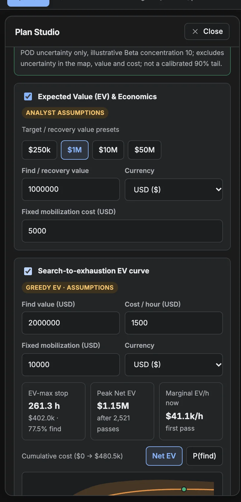

A map, however honest, does not search anything. Somebody has a helicopter for four hours, two dog teams until dark, a survey vessel at a day rate that would make you wince, and a sea state that closes the window on Thursday. The question that matters every morning is not "where is it?" but "where should the next hour go?", and its uncomfortable sibling, "is the next hour worth it at all?"
This part is about those two questions. The first has a beautiful classical answer that is eighty years old and still underused. The second needs one idea that search-and-rescue software has mostly avoided: putting a price on information.
Give cell \(i\) an amount of search effort \(e_i\), measured in hours of a particular asset. The chance of detecting the target if it is there rises with effort, with diminishing returns. The standard model, Koopman's random-search law, is exponential:
where \(W\) is the sweep width (how wide a strip the sensor effectively clears), \(v\) the speed and \(A_i\) the cell's area. A dense forest cell has a small \(a_i\) for a person on foot and a large one for a thermal camera at night; open water has a large one for a helicopter and a tiny one for a diver. All of those numbers live in ABYSSAL's asset library, 29 modes across platforms and sensors, and every one is labelled as an analyst assumption until measured.
With a total budget \(B\) of hours, the plan that maximises the chance of finding the target solves
The objective is concave, so the Karush–Kuhn–Tucker conditions are sufficient. They say that at the optimum every cell that receives effort has the same marginal return \(\mu\), and every cell left alone has a marginal return below it:
Here is the picture that makes it memorable. After the search, the probability left in a searched cell is \(p_i e^{-a_i e_i} = \mu / a_i\). When every cell is equally easy to search, that is the same number in every searched cell. Optimal search pours effort into the probability landscape like water into terrain: the highest peaks are flooded first, down to a common level, and the level falls as the budget grows. Cells below the waterline get nothing at all.
Grey outlines are each cell's prior probability; filled bars are what remains after the optimal plan; blue bars below are hours allocated. The dashed line is the common post-search level \(\mu/a\). Compare the optimal chance of success with spreading the same hours evenly, or betting them all on the most likely cell.
Two classical results make this more than a pretty picture. First, for exponential detection the optimal plan is uniformly optimal (a result due to Lawrence Stone): the plan for a budget of six hours is the first six hours of the plan for ten. You never regret having planned for less, which means the greedy, incremental "search wherever the marginal return is highest right now" is not a heuristic here; it is optimal for every budget simultaneously. Second, the solution is cheap: sort the cells by \(p_i a_i\) and find the water level in \(O(n \log n)\).
ABYSSAL's implementation is careful in the way the rest of the engine is. The water level is found in log space with cumulative logaddexp to avoid overflow on maps whose probabilities span a hundred orders of magnitude; the effort sum uses exact floating-point summation and steps back if rounding would overshoot the budget; tiny exposures use \(\log(1 - e^{-x}) \approx \log x\) directly. And the panel says what the answer is: an optimistic upper bound. It ignores transit between cells, the shape of a real sweep track, and the fact that targets move. It tells you where effort is worth most; it is not a route.
The Where next? panel is the one-asset version. Pick an asset and a POD preset (35% Quick, 60% Standard, 80% Thorough, 95% Exhaustive, or 0% Uncalibrated) and it ranks cells by chance of success per hour, with a one-click "search the next best area" that closes the loop: mark it searched, the map updates, the ranking updates, the undo is one click away.
Plan Studio handles the real situation: several assets with different speeds, sweep widths, endurance and detection, allocated together. Each asset gets its own track drawn on the map; the plan reports hours, marginal probability of success, area and track length per asset, with a 90% band from the uncertainty in POD; and the whole thing exports as CSV, GPX for handheld units, or a PDF tasking sheet.

The map is measured in bits. A coordinator's budget is measured in hours and pounds. To decide whether to search at all, those have to meet.
The cleanest bridge is the expected value of a search action. If finding the target is worth \(V\) (a salvage value, an insured loss, or, for a person, a value a public body is prepared to state for planning purposes), a plan costs \(C\), and its probability of success under the current map is \(P_\text{find}\), then
\(V^{*}\) is the break-even find value: the plan is worth running if and only if a find is worth more than that. It is a surprisingly useful number to show a decision maker, because it inverts the question. Nobody wants to say what a recovery is worth; everyone can say whether it is worth more than £2.4 million.
Plan Studio also reports information per pound: the mutual information between the target's location and the plan's outcome, per thousand spent. For a plan that searches cell \(c\) with detection \(d_c\) where the map holds mass \(m_c\),
Why both? Because they disagree in an instructive way. EV rewards plans likely to find the thing. Information rewards plans likely to change your mind, including plans that will almost certainly find nothing but would, by finding nothing, rule out a whole hypothesis. Early in a search, when the map is wide and the hypotheses are many, the second is often the better buy. Late in a search, when you are confident and only need to look, the first is. A tool that shows only one of them hides half the decision.

Plan Studio's EV comes with a band. It reflects uncertainty in the probability of detection only (an illustrative Beta distribution around the analyst's POD with concentration 10), and the label says so: it excludes uncertainty in the map, the value and the cost, and it is not a calibrated 90% tail. An earlier version called it "tail risk"; review renamed it, because it was not.
Every long search reaches a meeting where somebody asks whether to continue. It is the hardest meeting in search, because the sunk cost is visible, the people are tired, and the family is on the phone. Search Health's trap T7, sunk-cost continuation, exists for this meeting. The arithmetic is simple once the map is honest.
Run the greedy plan pass by pass. At each step the next pass goes to the cell with the most remaining unconditional mass \(m_c\); it finds the target with probability \(m_c d\); and afterwards that cell's mass is multiplied by \(1 - d\). The cumulative probability of success climbs towards a ceiling, and the ceiling is not 100%. It is \(a\), the probability the target was inside the map at all. The marginal value of the next pass is \(V\,m_c\,d\), falling as the map is searched out. Stop when it falls below the cost of the pass:
Forty cells with a decaying prior. Lower the value of the find or raise the cost, and the stopping point moves left. Lower P(inside) and the ceiling drops: no amount of searching inside the box can find a target that is not in it, and the right next action is to question the box.
ABYSSAL's version of this is the search-to-exhaustion curve in Plan Studio. It runs the greedy allocation on the real map with the real assets, reports cumulative cost against cumulative probability of success, the EV-maximising stopping point, the marginal EV of the next hour, and a POD-only uncertainty fan. It stops computing when one more pass costs more than it recovers and says so (reached_optimum), and it states its assumptions in the response: a stationary target, independent repeat passes, zero transit time, and values, costs and PODs typed in by a person.
A salvor has spent £6m over two seasons on a wreck believed to carry £40m of cargo. The map, honestly updated, says 31% of the remaining belief is inside the search box, and the best unsearched area holds 2% at a POD of 0.8 for £250k a pass. The next pass is worth \(40 \times 0.02 \times 0.8 = £0.64\)m against a cost of £0.25m: continue. But the previous £6m appears nowhere in that sum, and it should not. Sunk cost is not a term in the stopping rule. What does appear is the 69% outside the box, which says the best use of the next £250k might be archival research that moves the box, not another pass inside it.
The streetlight effect (T2). Effort drifts to where searching is easy: along trails, near the road, in daylight, close to base. Search Health ranks the mapped ground by its pre-search belief density and compares where the effort went with where the belief was. In the demo, 4.5% of effort went to the lowest-probability half of the ground, holding 1.7% of the belief: fine. In a real search where the lower half took 60% of the effort while holding 15% of the belief, the alarm reads exactly that sentence.
Repeating a failing method (T6). A third dog pass over the same gully, at repeat credit zero, adds almost nothing. Search Health compares the incremental found-chance of one more pass of the latest repeated method with a hypothetical independent method at the same POD over the same ground. When the gap exceeds two percentage points it says so: a different sensor here would be worth more than the same one again. It does not claim such a sensor exists; that is for a person to know.
Every search action has a cost and a payoff, and the payoff is information. Once the probability map is honest, "where next" and "whether at all" become questions of expected value, and the same arithmetic serves very different customers. A salvage company prices a sweep. A marine insurer prices the chance a loss is located before a reserve has to be set. A compliance desk prices the hours of satellite tasking needed to find out where a tanker that switched off its transponder actually went. The unit of value across all of them is the same: uncertainty removed, per pound, with an audit trail. Part 9 argues which of those markets are worth building for.
Next, Part 6 goes down a level, from evidence to raw measurements: radar images, hydrophone recordings, wakes, and the physics that turns them into detections a map can trust.